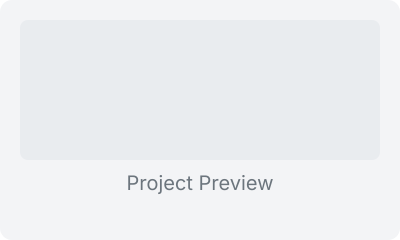

My Work
My projects show what I am practicing, not what I have mastered.
These projects reflect my current path in web development, mobile application learning, and practical IT problem solving.
Academic Web Application Work
I am practicing school development work focused on page structure, database-backed flows, forms, and maintainable code.
PHPLaravelMySQLGit
Discuss Work
In progress
Mobile UI Experiments
I am practicing mobile screens and interface flows as part of my web and mobile application development track.
FlutterUI DesignFormsResponsive
Ask About It
Building